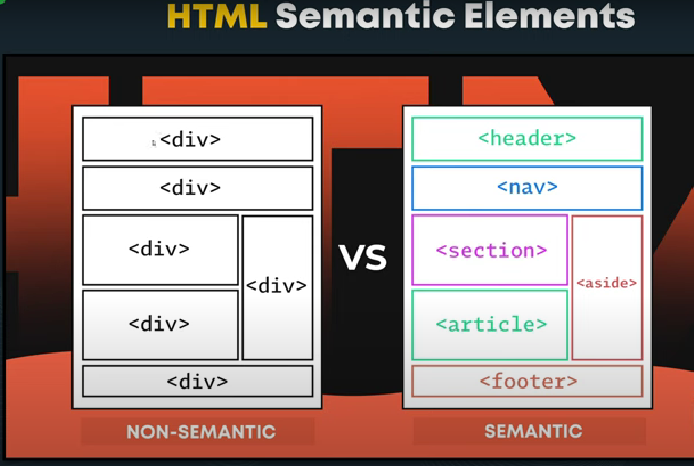

Semantic elements = elements with a meaning.
A Semantic element clearly describes its meaning to both the browser and the developer.
They are designed to be easily understood by search engines and other assistive technologies.
Semantic HTML5 elements are an important part of modern web development as they provide a clear structure to web documents and
improve accessibility, search engine optimization, and styling.
Examples:
- article (self-contained piece of content)
- section (logical grouping of content)
- nav (set of navigation links)
- aside (content that is related to the main content but not essential to understand it)
- header/footer (header or footer for a document or a section)

<header> : Represents the introductory content for a section, article, or entire web page. Ex contains logo, title ect.
<nav> : Navigation menu links would all be placed in a <nav> tag.
<main> : The body of a page should go in the <main> tag. There should be only one per page.
<article> : Represents an independent article on a web page. For example, a blog post.
<section> : Represent a way of grouping together nearby content of a similar theme.
<aside> : Represents the content that's less important. It's mostly using sidebars(ads).
Can contain information about the author, related posts, social media plugins etc.
<footer> : Represents the base of a page or section. It might include information and some site navigation.
DID YOU KNOW ?
Single <main> tag :
As a best practice, use only main tag per HTML page.
The main tag should encapsulate the primary content of your webpage, excluding headers, footers, and sidebars.
This tells the browser what the primary content of your webpage is.
Use Headers Wisely :
While you can use multiple headers tags. make sure they're appropriately placed within semantic elements
like article, section, or as introductory content for the whole page. Each header should provide relevant context.
Avoid Overuse :
Use Semantic elements purposefully and avoid overusing them. elements that accurately represent your content's structure
and hierarchy overusing them may lead to confusion and diluted semantics.
Understanding Nesting
: Understanding the hierarchy and nesting rules of semantic elements. For instance, article tag and
section tag can contain header and footer tags and other content, but nesting them should reflect logical relationships.
Enhance Accessibility :
Semantic elements greatly improve web accessibility. Use them to create a clear structure
for assistive technologies. Ensure that your content remains meaningful even it CSS or other styling is disabled.